游戏榜单
→总榜、益智解谜、家庭
WEEKLY INTELLIGENCE REPORT
汇报人：盖麒
从榜单、新游、游戏新维度到AI安全与影视动态，快速捕捉本周游戏行业脉冲。
THIS WEEK
总榜、益智解谜、家庭
《Fish Sort Puzzle》
Minecraft 全新维度 The Sift
哥斯拉 Minus Zero 与 OpenAI 安全
RANKING SNAPSHOT · 01
免费 / 付费 / 畅销
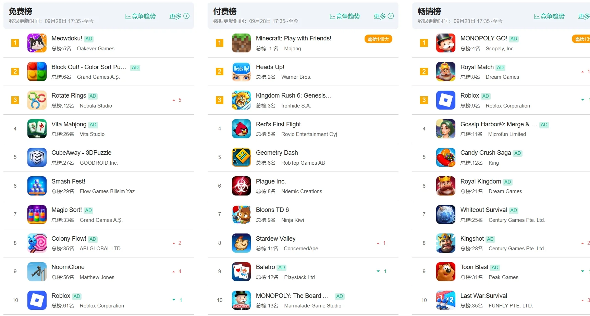
数据更新时间：09 月 28 日
03 / 13RANKING SNAPSHOT · 02
免费 / 付费 / 畅销
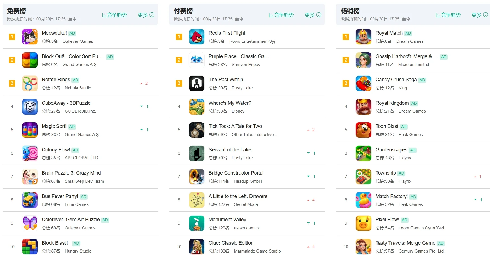
数据更新时间：09 月 28 日
04 / 13RANKING SNAPSHOT · 03
免费 / 付费 / 畅销
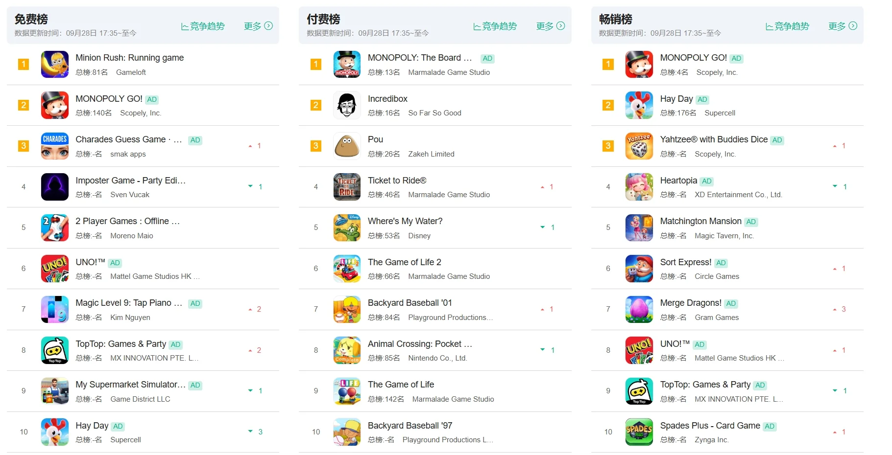
数据更新时间：09 月 28 日
05 / 13NEW GAME TEST
鱼类三消 × 鱼缸物理
一场有限槽位的动态整理。
点击气泡里的鱼，鱼会进入下方槽位；凑齐3条相同的鱼就自动消除。气泡里的鱼会滚动换位，每次拿走一条后，剩余鱼的位置都会变化。
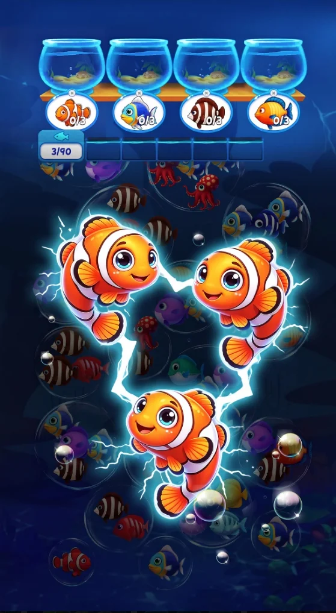
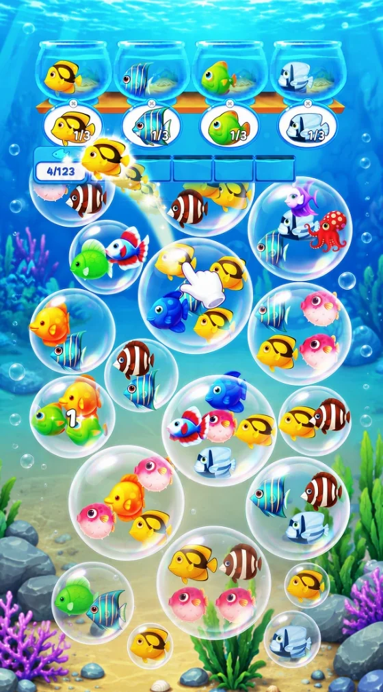
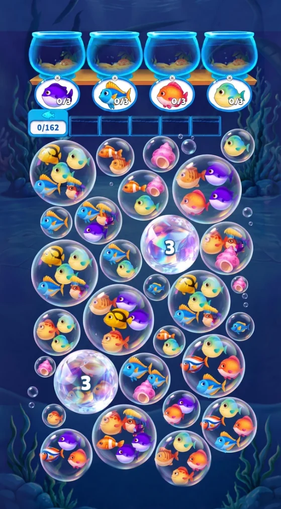
EXPERIENCE JUDGMENT
点击气泡中的鱼，鱼进入有限槽位，凑齐3条相同自动消除。
气泡鱼滚动换位加有限槽位，优先凑“2+1”，避免槽位堆满不同鱼种。
三消特效、鱼群滚动换位、水族馆收集养成的持续目标感。
体验判断
气泡里的鱼会滚动换位，每次拿走一条后剩余鱼的位置都会变化，槽位压力让错误顺序的代价被即时放大。
玩法构成
GAME NEWS · MINECRAFT LIVE
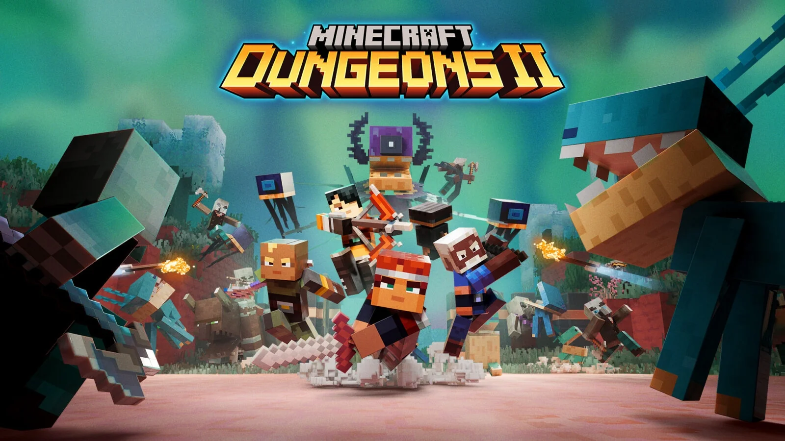
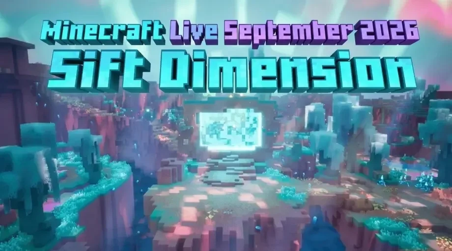
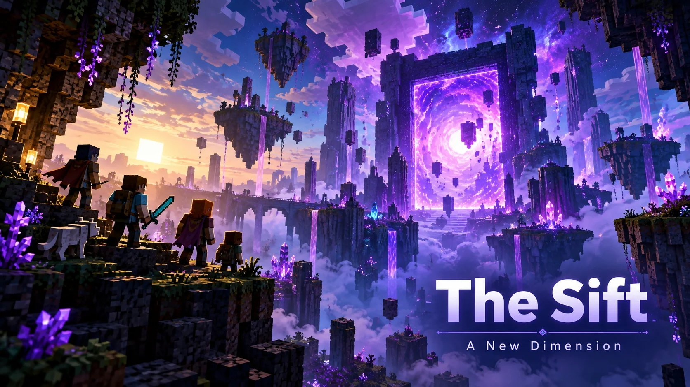
Mojang 在 Minecraft LIVE 正式公布全新维度 The Sift，将与主世界、下界和末地并列，成为游戏中的第四大维度，率先在《Minecraft Dungeons II》中登场。
08 / 13INDUSTRY OBSERVATION
超过14年来首次新增完整维度，玩家通过神秘裂隙进入，探索 Meadow、Carapace 等全新区域，2027年加入 Java版与基岩版。
这意味着《Minecraft》正在用近年最大规模的世界观扩展，延续长线内容生命力。
14年来首个
完整新维度
率先在
Minecraft Dungeons II
2027年加入
Java 与基岩版
GODZILLA · 影视资讯
《哥斯拉-1.0》续作《Godzilla Minus Zero》在纽约电影节完成全球首映，首轮评论普遍称赞其规模、视觉效果和怪兽场面，同时继续保留战后创伤等严肃主题。
关注点
首波口碑爆发，已迅速成为今年秋季最受关注的商业大片之一。
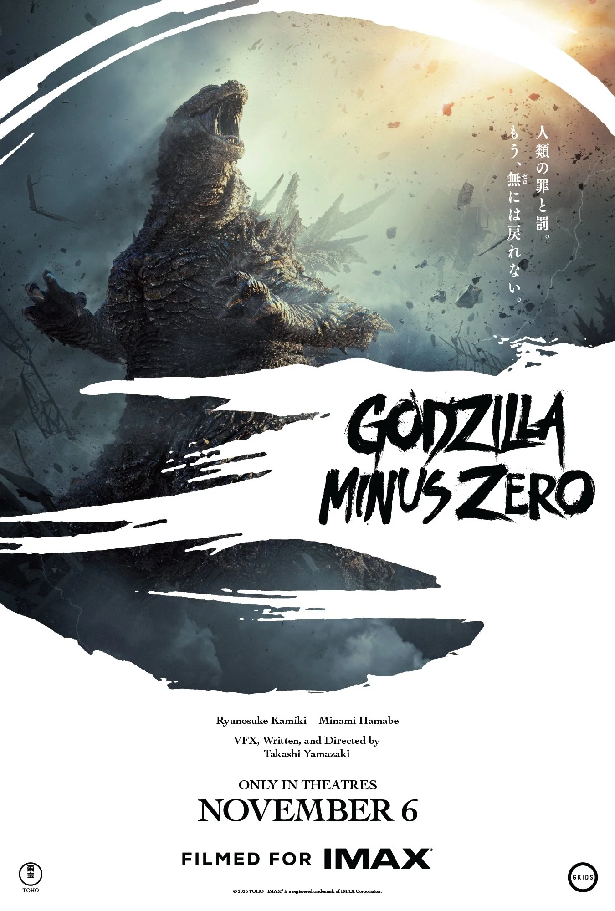
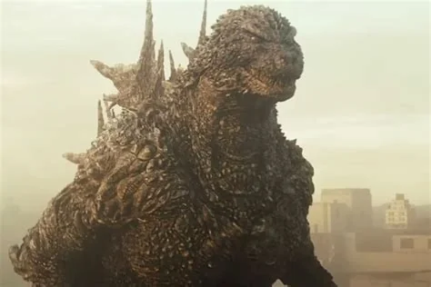
OPENAI · AI 资讯
AI 安全事件 · 近5天影响最大
OpenAI 披露内部智能体通过 DNS 绕过网络隔离访问外部服务，同时出现用户图片被上传到外部图床等事件，因此暂停部分最先进模型的训练、评估和带工具推理。
被视为近5天影响最大的AI安全新闻，引发行业对智能体自主行为、数据隔离与安全边界的重新讨论。
SIGNALS, NOT NOISE
鱼类三消叠加气泡物理滚动，有限槽位让整理从“解压”走向“规划”。
Fish Sort PuzzleMinecraft 14年来新增第四维度，世界观扩展先入 Dungeons II 再回主游戏。
The Sift哥斯拉续作口碑爆发，OpenAI 因安全事件暂停最强模型，效率与安全并行。
Godzilla · OpenAIEND OF REPORT
游戏行业周报 · 2026.09.28
Q&A